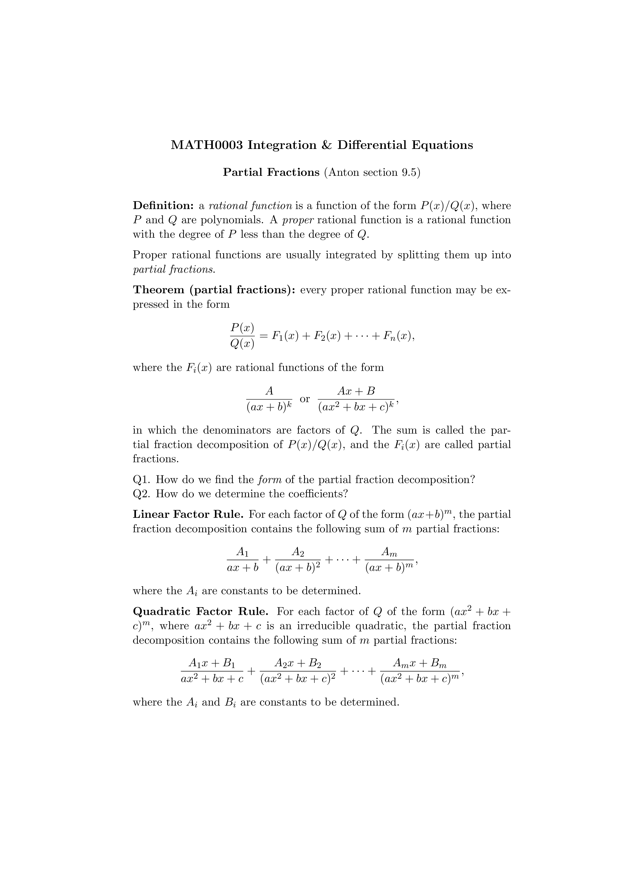

\documentclass[11pt]{article}
\pagestyle{empty}
\begin{document}
\begin{center}
\large{\bf MATH0003 Integration \& Differential Equations}
\normalsize
\bigskip
{\bf Partial Fractions} (Anton section 9.5)
\end{center}
\medskip
\noindent
{\bf Definition:} a {\em rational function}
is a function of the form $P(x)/Q(x)$,
where $P$ and $Q$ are polynomials.
A {\em proper} rational function is a rational function
with the degree of $P$ less than the degree of $Q$.
\medskip
\noindent
Proper rational functions are usually integrated
by splitting them up into {\em partial fractions}.
\medskip
\noindent
{\bf Theorem (partial fractions):} every proper rational function
may be expressed in the form
\[
\frac{P(x)}{Q(x)} = F_1(x) + F_2(x) + \cdots + F_n(x),
\]
where the $F_i(x)$ are rational functions of the form
\[
\frac{A}{(ax+b)^k} \;\; {\rm or} \;\; \frac{Ax+B}{(ax^2+bx+c)^k},
\]
in which the denominators are factors of $Q$.
The sum is called the partial fraction decomposition of $P(x)/Q(x)$,
and the $F_i(x)$ are called partial fractions.
\medskip
\noindent
Q1. How do we find the {\em form} of the partial fraction decomposition?
\noindent
Q2. How do we determine the coefficients?
\medskip
\noindent
{\bf Linear Factor Rule.}
For each factor of $Q$ of the form $(ax+b)^m$,
the partial fraction decomposition contains
the following sum of $m$ partial fractions:
\[
\frac{A_1}{ax+b} + \frac{A_2}{(ax+b)^2} + \cdots + \frac{A_m}{(ax+b)^m},
\]
where the $A_i$ are constants to be determined.
\medskip
\noindent
{\bf Quadratic Factor Rule.}
For each factor of $Q$ of the form $(ax^2+bx+c)^m$,
where $ax^2+bx+c$ is an irreducible quadratic,
the partial fraction decomposition contains
the following sum of $m$ partial fractions:
\[
\frac{A_1x+B_1}{ax^2+bx+c} + \frac{A_2x+B_2}{(ax^2+bx+c)^2} + \cdots
+ \frac{A_mx+B_m}{(ax^2+bx+c)^m},
\]
where the $A_i$ and $B_i$ are constants to be determined.
\end{document}Created by David Li